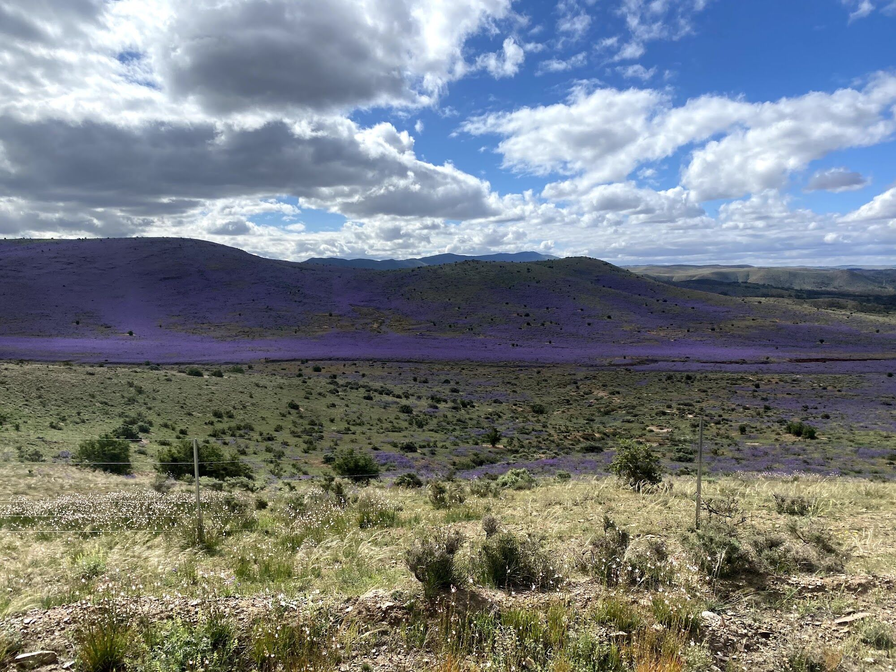
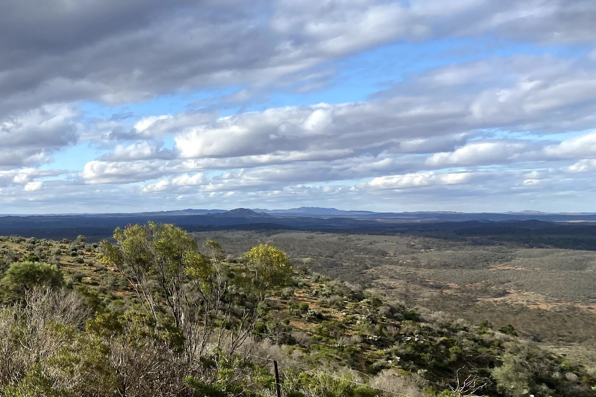
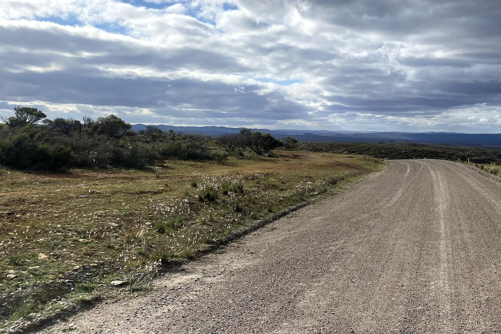
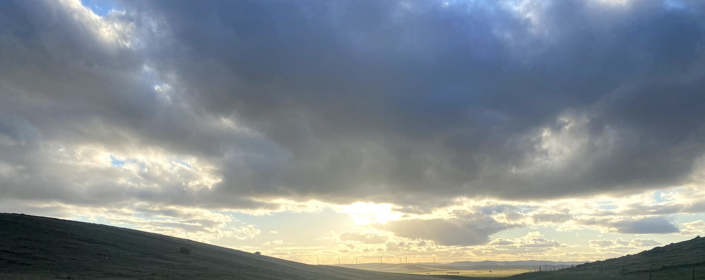
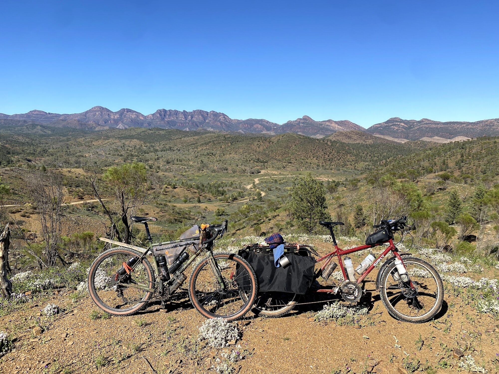
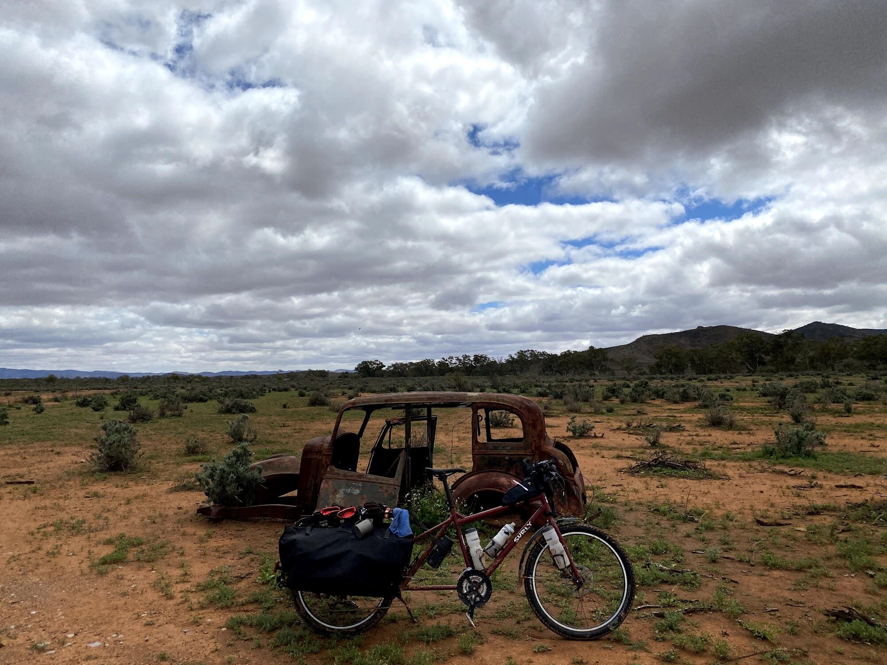
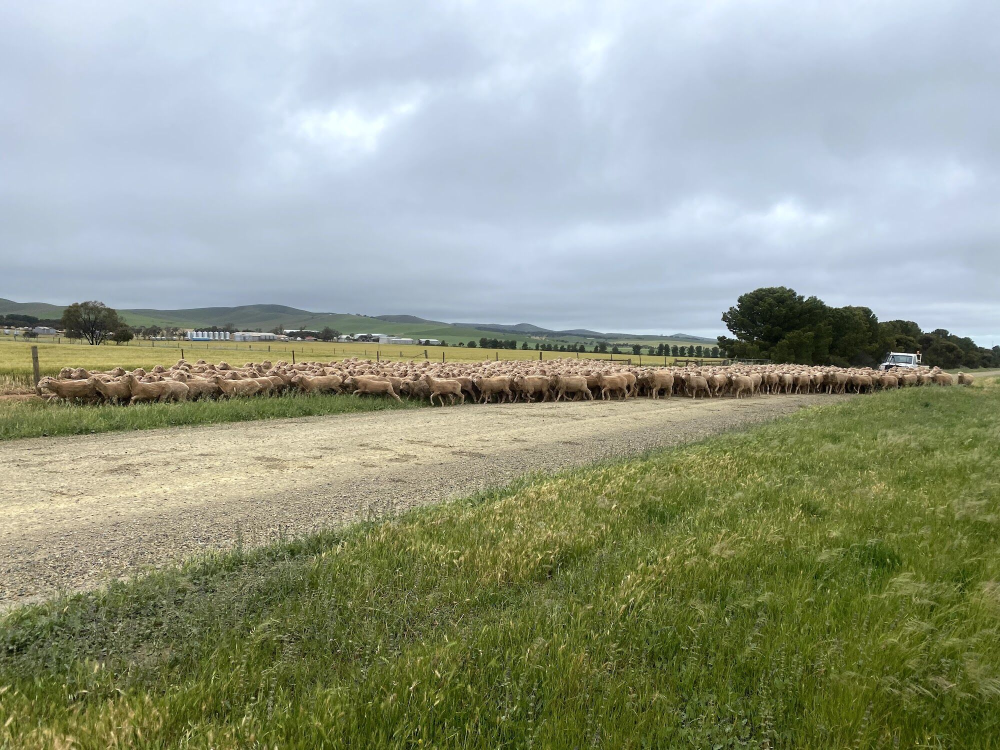
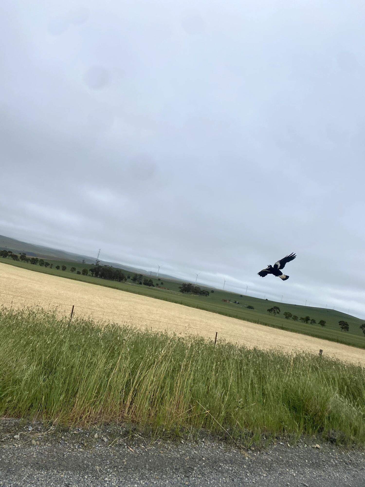
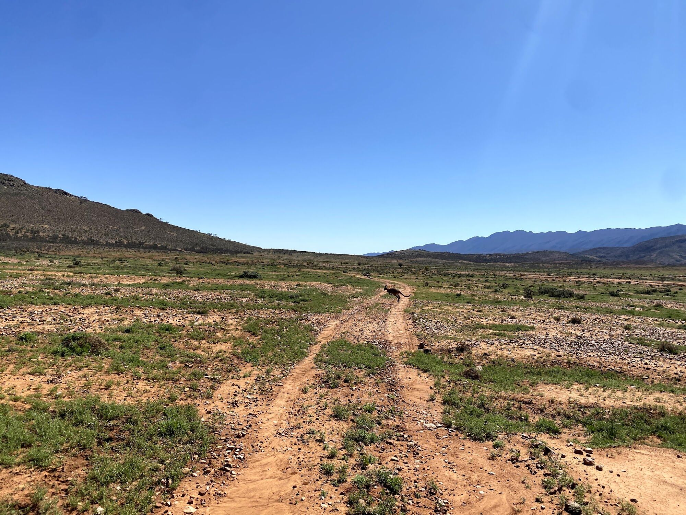

At a glance
One of Australia’s great off-road rides
The Mawson Trail starts at the top of the Torrens Linear Park on Gorge Road, just east of Adelaide, and runs north through the Mount Lofty Ranges, the Barossa and Clare valleys and the Mid North into the Flinders Ranges, finishing at Blinman.
It is named after geologist and Antarctic explorer Sir Douglas Mawson, who studied the geology of the Flinders Ranges. Cycling groups began planning the trail in 1990 and volunteers marked out the route. It is mostly off-road and well suited to mountain bikes and bikepacking rigs.
Learn more about the trail
- Trails SAThe official source of Mawson Trail information, closures and route changes.
- WikipediaHistory of the trail and information on the towns along it.
- Dave Hume’s Mawson Trail siteComprehensive information from an artist who has ridden the trail many times.
- Length
- ~900 km
- Towns on route
- 22
- Start
- Gorge Rd, Adelaide
- Finish
- Blinman
- Ranges
- Mt Lofty & Flinders
- Surface
- Mostly dirt

Official Trails SA route
The route, both ways
Most riders go south to north, starting in the Adelaide Hills and finishing at Blinman. A smaller number ride it north to south. That takes different logistics, but you finish among the green hills instead of out in the outback.
Green and white markers waymark the trail the whole way, but you still need a good set of maps.
These routes were built directly from the Trails SA source. Export them in any format to load onto your bike computer, pin them for later, download them for offline use, or navigate with the RideWithGPS app.
Other ways to navigate
-
Route file
OpenStreetMap route
Another accurate source of the route, usable with the OsmAnd app for iOS and Android.
-
App
The Mawson Trail App AU$21.99
High resolution offline maps, a detailed elevation profile, trail and accommodation info along the way, gear advice, and first aid and emergency info. For iOS and Android.

South to north
Towns along the trail
The trail links a string of country towns for food, water and a bed. Towns thin out as you head north, so plan your resupply carefully in the Flinders.
Adelaide Hills
- Adelaide (Gorge Rd)
- Lobethal
- Birdwood
Barossa
- Rowland Flat
- Tanunda
- Nuriootpa
Clare & Mid North
- Kapunda
- Riverton
- Auburn
- Clare
- Burra
- Hallett
- Spalding
Southern Flinders
- Laura
- Melrose
- Wilmington
- Quorn
Flinders Ranges
- Cradock
- Hawker
- Rawnsley Park Station
- Wilpena
- Blinman
Town list from Wikipedia. Check Trails SA for current services and route changes.

Plan your ride
Get ready to ride
Planning guides and bike setups from riders who know the trail, plus stories, events and a community to ask.
Planning & bike setups
-
Guides & setups
La Velocita
A series of blogs covering different ways to ride the trail and bike setups.
-
Planning & packing
Nat Redmond
A local CX champ’s site with a handy planning spreadsheet.
Stories, events & community
-
Ride story
CyclingAbout: Riding the 900km Mawson Trail
Alee Denham’s day-by-day account of riding the whole trail with a crew of strong, experienced cyclists in tough conditions. Great photos throughout.
-
Supported event
BikeSA Outback Odyssey
A regular supported event to ride the trail, run by BikeSA.
-
Community
Ride the Mawson Trail Facebook group
A great place to ask questions and see other people’s experiences.

From the saddle
On the trail
Landscapes from a ride along the Mawson Trail, October 2020. Tap a photo to see it full size.










